What America's infrastructure crisis reveals about India's urban future — and what India's traditional cities reveal about the solution
Lafayette, Louisiana is a midsized American city that did something almost no city does: it added up what it would cost to replace all of its infrastructure — every road, pipe, drainage system, and utility line — and compared that number to its total tax base.
The result was devastating. $32 billion in infrastructure replacement costs against a private tax base worth $16 billion. A 2:1 ratio. To close the gap, every median household in Lafayette would need to pay an additional $8,000 per year — roughly one in five dollars of household income — just to maintain what already exists. Not to build anything new. Just to keep the lights on and the roads paved.
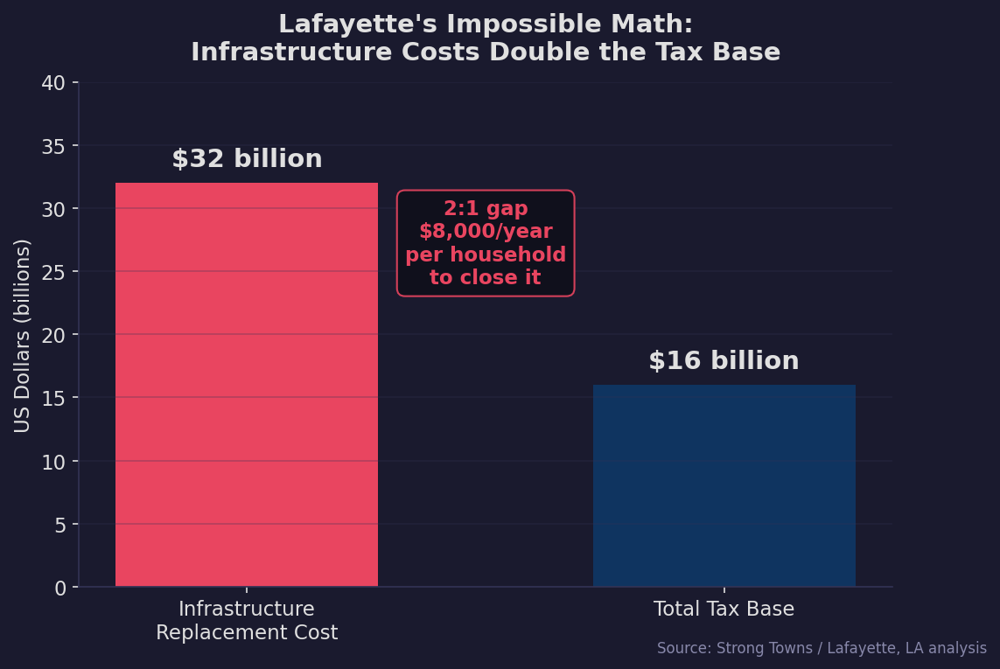
Lafayette is not an outlier. It is the norm. According to the Strong Towns movement, founded by Charles Marohn, this pattern repeats in city after city across North America. The post-World War II suburban development model — wide roads, single-use zoning, car-dependent sprawl — creates an illusion of wealth while silently accumulating infrastructure debts that no city can afford to repay.
Now consider this: India needs to build the equivalent of two Mumbai-sized cities every year through 2030 to house its rapidly urbanizing population. The country faces an $827 billion infrastructure financing gap by 2030. The development pattern India chooses for these new cities will determine whether they generate wealth or silently accumulate unpayable debts — just like Lafayette.
The mechanism is simple. When a city approves a new subdivision, it collects immediate revenue: permit fees, impact fees, property taxes, sales taxes. But it also assumes long-term liabilities: every road, water main, sewer line, and drainage system in that subdivision will need maintenance and eventually full replacement, typically within 25 to 50 years. The problem, as Strong Towns has documented, is that cities collect "just a dime or two of revenue for each dollar of liability" they take on.
This creates a structural dependency on continued growth. New development revenue is used to service the infrastructure obligations of older development. Which means the city needs ever-increasing growth just to maintain what it already has. This is, by definition, a Ponzi scheme.
The numbers from Kansas City make the scale visceral. Between 1960 and 2019, Kansas City added 1,625 miles of new streets — a 169% expansion of its road network — to accommodate just 13% population growth. That works out to roughly 148 feet of new road for every new resident, compared to about 12 feet per resident in the pre-war traditional development pattern. A 12x difference in infrastructure burden per person.
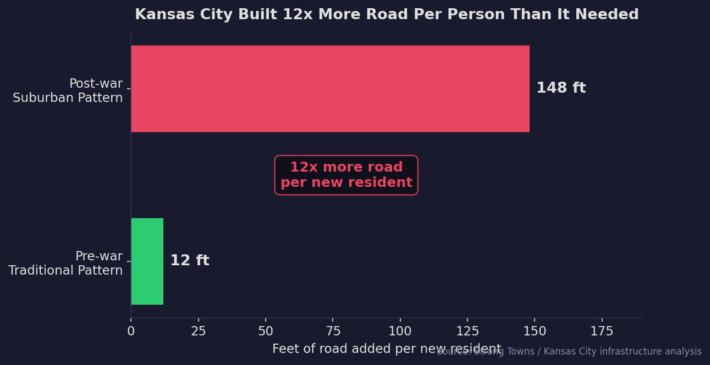
At the national scale, the American Society of Civil Engineers estimates a $3.7 trillion infrastructure gap across the United States. This is not the result of neglect or underfunding. It is structural: the suburban development pattern itself cannot generate enough revenue to maintain what it builds.
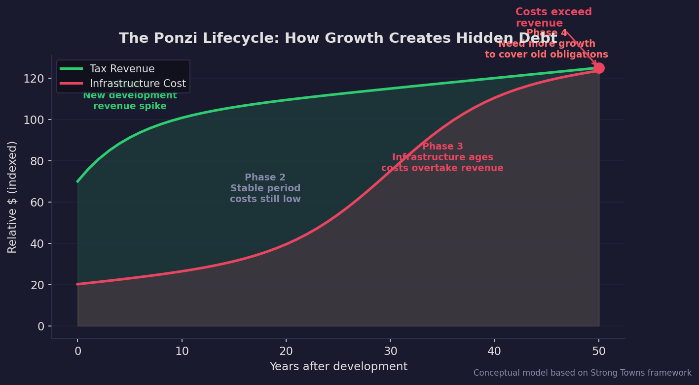
The lifecycle is predictable. New development arrives with a revenue spike (Phase 1). For 15-20 years, infrastructure costs remain low — everything is new (Phase 2). Then maintenance costs begin climbing as roads crack, pipes corrode, and systems age (Phase 3). Eventually, replacement costs exceed what the development generates in tax revenue (Phase 4). The only way out is more new growth — which starts the cycle again. Suburbs, as Strong Towns puts it, are "a one-life-cycle product": peak wealth on day one, all downhill from there.
If the Growth Ponzi Scheme is the diagnosis, value per acre is the diagnostic tool. Most cities measure economic contribution in absolute terms: total property value, total tax revenue, total jobs. But Strong Towns argues this is like judging a farm's productivity by its total acreage rather than its yield per acre. When you normalize by the amount of land (and infrastructure) a development consumes, the results are consistent and dramatic.
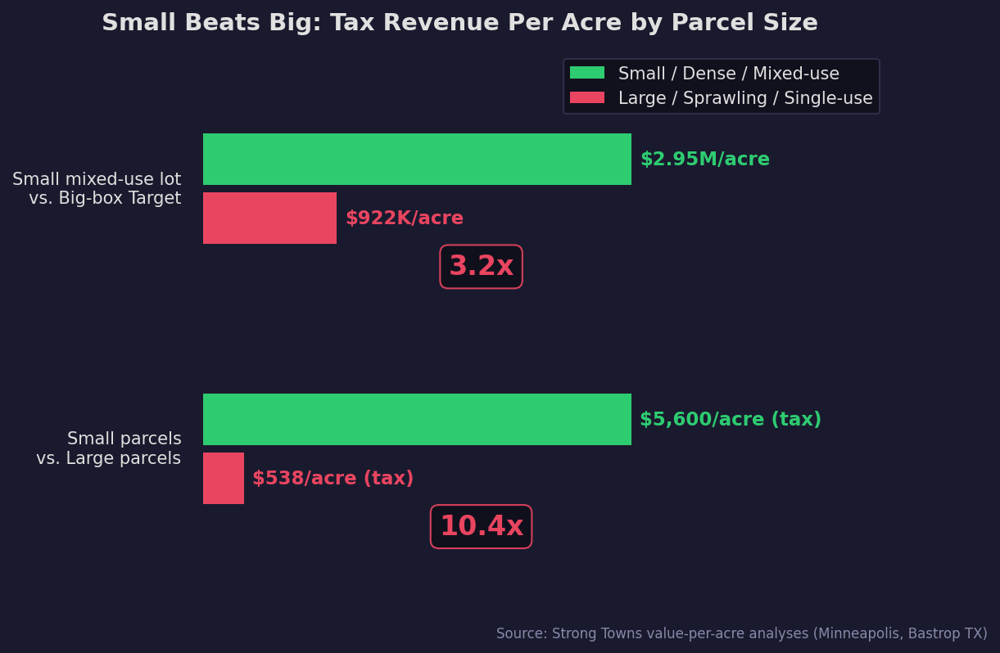
In Minneapolis, a small mixed-use lot occupied by a Taco Taxi generates $2.95 million per acre in assessed value. A big-box Target store across town: $922,000 per acre. The small lot is 3.2 times more productive. In Bastrop, Texas, the difference is even starker: small parcels generate $5,600 per acre in property tax versus $538 per acre for large parcels — a 10.4x difference.
The conventional wisdom says big-box stores and large suburban developments are the economic engine of a city. The data says the opposite: small, dense, mixed-use development generates 3 to 10 times more revenue per acre of infrastructure it requires. This pattern holds in every city where the analysis has been done.
Strong Towns has also documented what they call the cross-subsidy finding: in city after city, older, poorer, denser neighborhoods — with their narrower streets, natural drainage, and compact lots — generate more tax revenue per dollar of infrastructure cost than affluent suburbs. The poor neighborhoods are, in effect, subsidizing the affluent ones. This is, as Strong Towns describes it, "a ubiquitous condition of the American development pattern."
Here is where the story takes an ironic turn. The development pattern that Strong Towns advocates — dense, mixed-use, walkable, incrementally built, human-scale — is not a futuristic ideal. It is an ancient one. And India's traditional cities embody it almost perfectly.
The walled city of Jaipur, laid out in 1727, was designed with essential services, recreation, and workplaces accessible within a short walk of residential areas — a "15-minute city" nearly three centuries before the term was coined. Old Delhi's katras, Pune's peths, Kolkata's para neighborhoods — all developed organically with ground-floor commercial uses, residential space above, and a fine-grained street network that prioritized walking over vehicles.
Between 25% and 50% of all urban trips in major Indian cities are still made entirely on foot, according to Clean Air Asia. In medium and smaller cities, walking accounts for 60-70% of trips. This is not a sign of poverty or backwardness. It is a sign that traditional Indian urbanism works at the human scale — the exact scale that produces the highest value per acre.
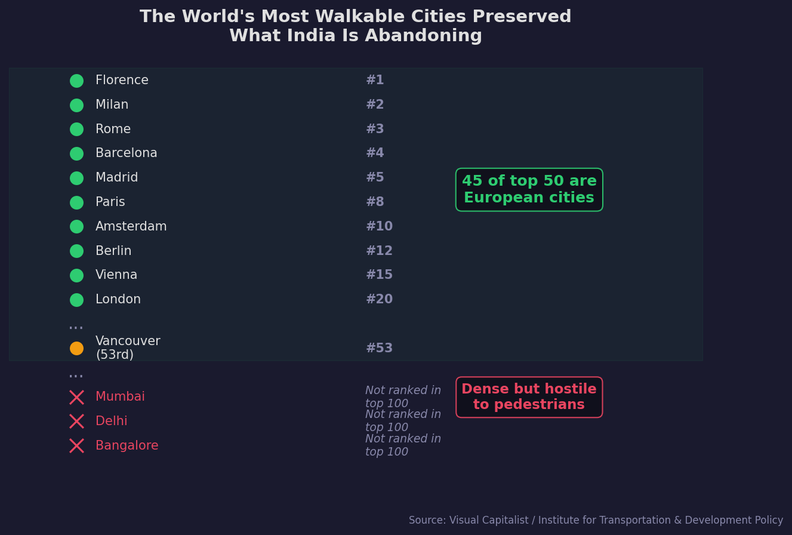
The global walkability data makes the connection explicit. 45 of the top 50 most walkable cities in the world are European — cities that, like India's traditional cores, preserved their pre-automobile, mixed-use, human-scale urban fabric. The highest-ranked North American city, Vancouver, sits at 53rd. Indian cities, despite their extraordinary density, don't rank — not because they lack density, but because they lack the pedestrian infrastructure (sidewalks, crossings, traffic calming) that makes density livable.
The Strong Towns framework identifies seven key distinctions between traditional and suburban development patterns. When you map these onto the Indian context, the alignment is striking:
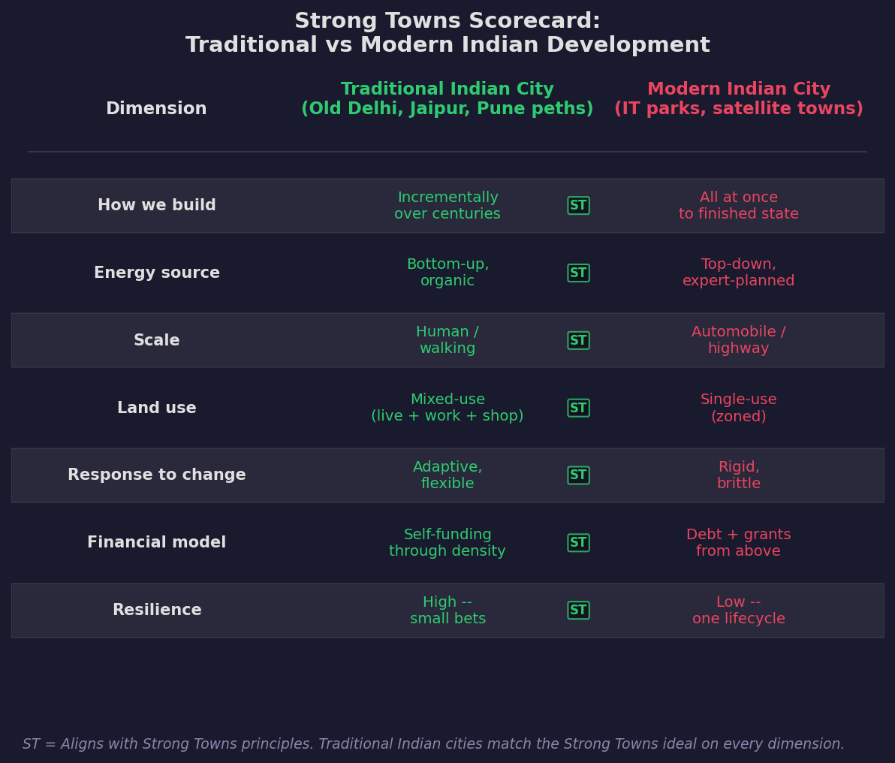
Traditional Indian cities match the Strong Towns ideal on every dimension: incremental construction, bottom-up energy, human scale, mixed use, adaptive response, self-funding through density, and resilience through small bets. Modern Indian development — IT parks, satellite cities, gated townships, wide arterial roads — mirrors the American suburban pattern on every dimension.
America is spending billions trying to recreate the urban pattern that India's traditional cities already embody. The 15-minute city, the mixed-use neighborhood, the walkable street — these are not Western innovations being brought to India. They are Indian innovations being rediscovered by the West.
If traditional Indian urbanism is the model, why are Indian cities in crisis? Because density alone does not create productive, livable places. You need density plus pedestrian infrastructure plus mixed-use zoning plus fiscal discipline. Indian cities have the density. They are failing on almost everything else.
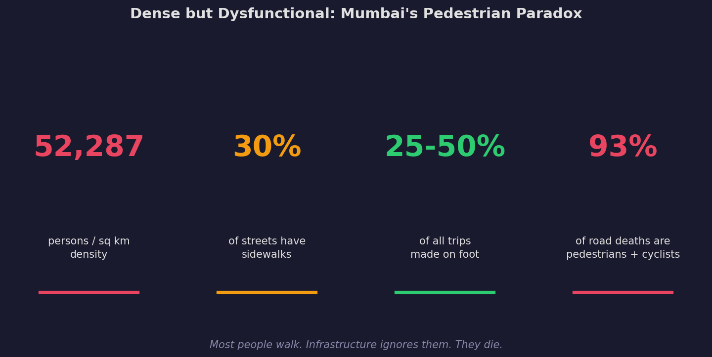
Mumbai has 52,287 persons per square kilometer — among the highest urban densities on earth. Yet barely 30% of its streets have pedestrian pathways. One in four to one in two trips is made on foot. And 93% of road fatalities in Indian cities are pedestrians and cyclists, according to ORF analysis of 2022 data. The infrastructure is designed for cars in a country where most people walk.
Meanwhile, the sprawl is accelerating. According to the World Resources Institute, 65% of urban development in India occurs outside planned areas. Only 24% of Indian cities have established master plans. And the costs of this unplanned sprawl are staggering.
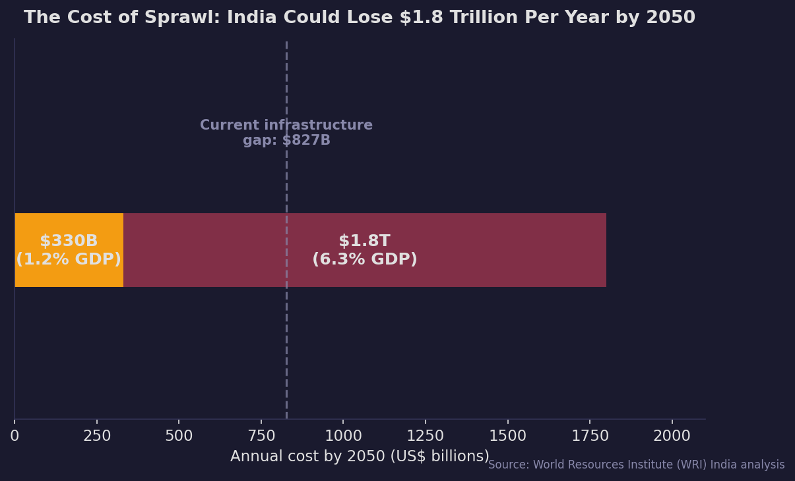
WRI estimates that urban sprawl could cost India between $330 billion and $1.8 trillion per year by 2050 — equivalent to 1.2% to 6.3% of GDP annually. For context, India's entire current infrastructure financing gap is $827 billion total; the annual sprawl cost could exceed this every single year. A 10% increase in a city's "dispersion index" (a measure of sprawl) correlates with up to a 0.9% decrease in economic output. And infrastructure and services in dispersed, automobile-oriented developments cost 10-30% more than in compact, connected neighborhoods.
India is building Kansas City's pattern at Mumbai's scale.
Much of India's sprawl is not organic. It is mandated by regulation.
Floor Space Index (FSI) — called Floor Area Ratio (FAR) in North America — determines how much built-up area is permitted on a plot of land. An FSI of 2 means you can build a total floor area twice the size of the plot. In high-demand cities with expensive land, FSI effectively determines density: low FSI forces development outward to cheaper peripheral land, while higher FSI enables vertical growth within existing urban fabric.
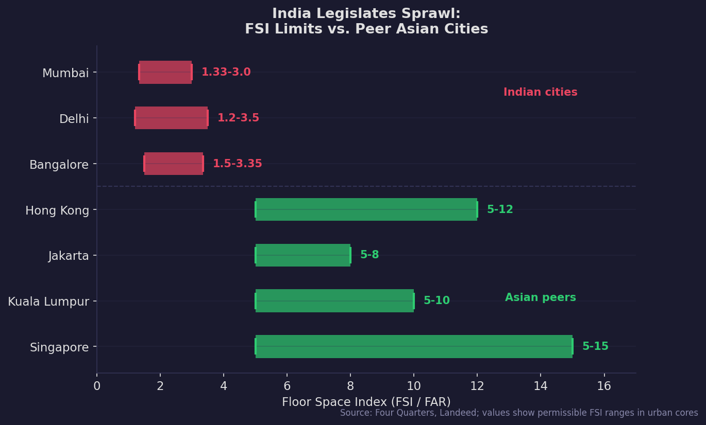
Mumbai allows an FSI of 1.33 to 3.0. Delhi: 1.2 to 3.5. Bangalore: 1.5 to 3.35. Now compare this to peer Asian cities: Singapore allows 5 to 15. Kuala Lumpur: 5 to 10. Jakarta: 5 to 8. Hong Kong: 5 to 12. Indian cities allow roughly one-third to one-quarter the density of comparable Asian cities.
Low FSI in a city with high land demand does not prevent growth. It redirects growth — outward, into peripheral areas that require new roads, new water lines, new drainage, new everything. It is the regulatory equivalent of Kansas City's 148 feet of road per person: the law itself mandates the inefficient, expensive pattern.
Lafayette's 2:1 infrastructure-to-tax-base ratio is alarming. But Lafayette at least has a functional property tax system. Indian cities face a compounded crisis: they are building the expensive development pattern and they lack the revenue tools to maintain even the cheap one.
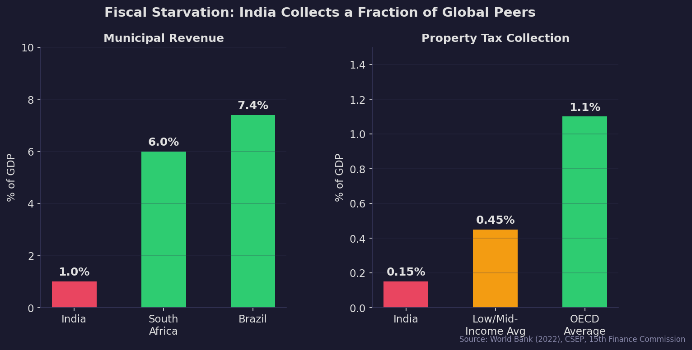
Municipal revenues in India have stagnated at roughly 1% of GDP for over a decade, according to the World Bank. Brazil collects 7.4%. South Africa collects 6%. India's municipalities are funded at roughly one-seventh the rate of comparable developing economies.
The property tax situation is worse. Property tax — the fiscal backbone of any local government, and the primary mechanism for capturing the land value that public infrastructure creates — contributes just 0.15% of GDP in India. The OECD average is 1.1%. Even the average for low- and middle-income countries is 0.3-0.6%. India collects roughly one-sixth of the global norm. In some cities, collection efficiency runs as low as 3% of target.
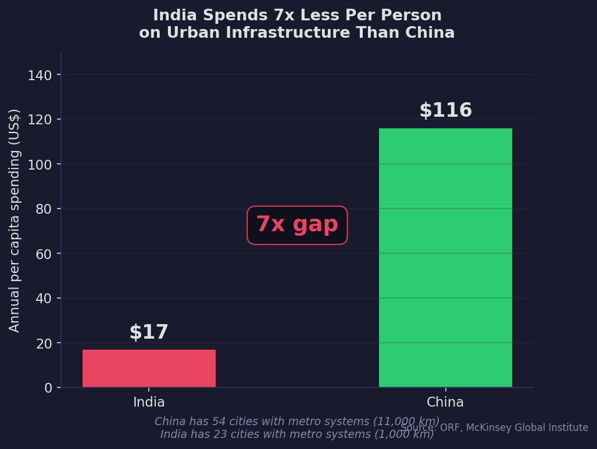
The per capita numbers tell the story plainly. India spends $17 per person per year on urban infrastructure. China spends $116 — nearly 7 times more. The result: China has 54 cities with metro systems covering 11,000 kilometers of track. India has 23 cities with metros covering about 1,000 kilometers.
Central and state governments finance 72-75% of urban infrastructure spending; commercial financing provides a meagre 5%. Less than half of the 18 functions devolved to municipal bodies under the 74th Constitutional Amendment have a corresponding financing source. Indian cities are constitutionally responsible for services they are not fiscally equipped to provide.
The Strong Towns insight is that the suburban development pattern cannot generate enough revenue to maintain itself even with a functional tax system. India is adopting that pattern with a tax system that collects one-sixth of the global norm. The math is not just bad. It is impossible.
The diagnosis is grim. But where Indian cities have tried the incremental, human-scale approach, the results have been immediate and measurable.
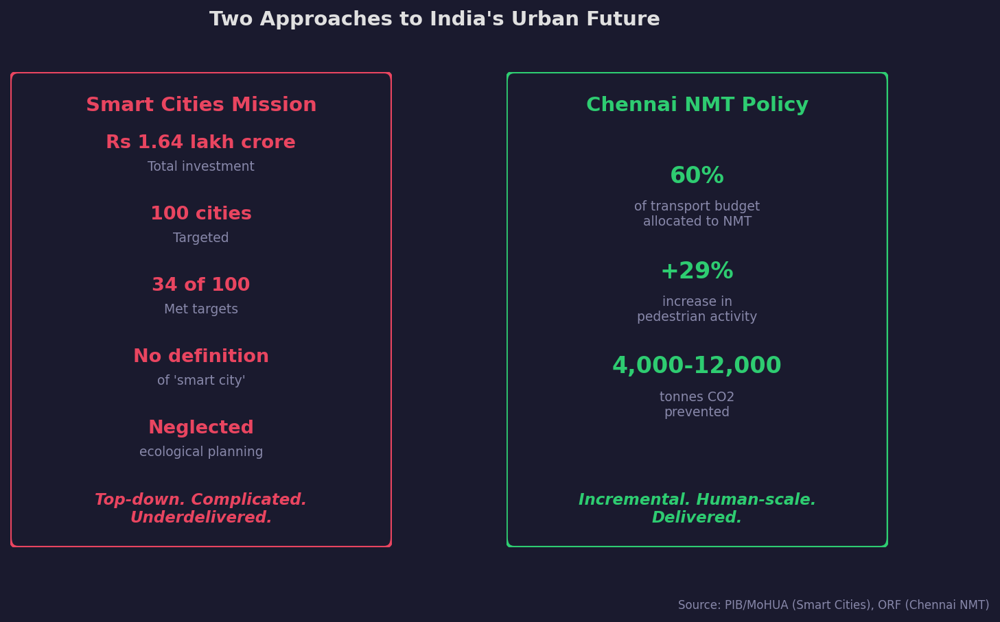
Chennai adopted a Non-Motorized Transport (NMT) policy that mandated 60% of its transport budget be allocated to pedestrian and cycling infrastructure. The result: a 29% increase in pedestrian activity and an estimated 4,000 to 12,000 tonnes of greenhouse gas emissions prevented — equivalent to removing 1,000 to 2,900 cars from the road. Small investment, targeted at human-scale infrastructure, measurable results.
Contrast this with India's flagship urban program: the Smart Cities Mission. Rs 1.64 lakh crore (~$20 billion) invested across 100 cities. The results: only 34 of 100 cities met their targets despite repeated deadline extensions (from 2020 to 2023 to 2024). No proper definition of "smart city" was ever established. Projects neglected ecological planning, prioritizing CCTV cameras and command-and-control centres over sidewalks and drainage. A Nature review documented encroachment on wetlands, destruction of tree cover, and degradation of public commons.
The contrast maps directly onto the Strong Towns framework. The Smart Cities Mission is the suburban approach: top-down, expert-planned, built all at once to a "finished state," complicated, and brittle. Chennai's NMT policy is the traditional approach: incremental, human-scale, adaptive, and resilient. Strong Towns calls this the "next smallest thing" philosophy: observe where people struggle, ask what the smallest useful intervention is, do it, and repeat.
On the property tax front, there are bright spots too. Raipur implemented GIS-based property mapping and digital door numbers, boosting registered properties by 53% and increasing property tax demand by 96%. The tools exist. The question is whether the political will does.
India must build the equivalent of 700 to 900 million square meters of urban space annually through 2030. Two Mumbai-sized cities every year. The development pattern it chooses will lock in infrastructure costs — or savings — for generations.
Path A is the one India is currently on: low FSI forcing peripheral sprawl, car-centric arterial roads through pedestrian-majority cities, massive top-down programs that prioritize technology over fundamentals, and a property tax system that captures one-sixth of the value it should. This is the Kansas City path — 148 feet of road per person, infrastructure liabilities that compound faster than revenue, and an eventual fiscal reckoning that no amount of "smart city" technology can forestall.
Path B is the one India's traditional cities already demonstrate: dense, mixed-use, walkable neighborhoods where small actors make small bets over long time periods. Where rising land values and incremental development create a resilient financial plateau. Where property tax reform captures the value that public investment creates. Where transport budgets prioritize the 25-50% of people who actually walk over the minority who drive.
The irony is sharp. Europe preserved the traditional pattern and now leads the world in urban livability. America destroyed it and now faces a $3.7 trillion infrastructure gap. India — which still has living examples of the pattern in every old city core — is actively importing the failed American model.
India is importing a product that the manufacturer is actively recalling.
The window to course-correct is narrow but open. The question is not whether India can afford to invest in dense, walkable, incrementally built cities. The question, as Lafayette's impossible math makes clear, is whether India can afford not to.
The suburban development pattern — wide roads, single-use zoning, car-dependent sprawl — cannot generate enough tax revenue to maintain the infrastructure it requires. This is not an American problem. It is a pattern problem. Any city that adopts it inherits its fiscal consequences.
Old Delhi, Jaipur, Pune, Kolkata — India's traditional urban cores embody every principle Strong Towns advocates: incremental, mixed-use, walkable, human-scale, bottom-up, self-funding through density. These are not relics to be replaced. They are models to be extended.
Indian cities have world-leading density but world-lagging pedestrian infrastructure. Mumbai's 52,287 persons per sq km means nothing when 93% of road deaths are pedestrians and cyclists. Density plus walkability creates value. Density alone creates misery.
Municipal revenue at 1% of GDP. Property tax collection at 0.15%. Per capita infrastructure spending at $17/year. Even the efficient development pattern would strain this system. The inefficient pattern — costing 10-30% more per unit — makes the math impossible.
Chennai's NMT policy (60% transport budget, 29% pedestrian increase) and Raipur's property tax digitization (53% more properties, 96% more revenue) show that small, targeted investments in the right pattern deliver outsized returns. India does not need a revolution. It needs a thousand small, smart bets.
This story synthesizes findings from the Strong Towns movement with data on Indian urbanization from government agencies, multilateral organizations, and research institutions. All data points are cited inline. The charts use hardcoded values from published sources; no original data analysis was performed.
| Source | Data Used |
|---|---|
| Strong Towns / Charles Marohn | Growth Ponzi Scheme framework, Lafayette and Kansas City analyses, value-per-acre studies, traditional vs suburban development distinctions |
| World Resources Institute (WRI) | Sprawl cost estimates ($330B–$1.8T/year by 2050), dispersion index correlation, compact vs dispersed infrastructure cost differentials |
| World Bank (2022) | Municipal finance data, $827B infrastructure gap, property tax as % of GDP, central/state financing share |
| Observer Research Foundation (ORF) | Traditional Indian 15-minute cities, urban density analysis, walkability and road safety data, Chennai NMT policy outcomes |
| McKinsey Global Institute | India-China per capita infrastructure spending comparison, annual urban space construction requirements |
| Clean Air Asia | Walking mode share in Indian cities (25-50% in major cities, 60-70% in smaller cities) |
| CSEP / NIPFP | Property tax analysis, OECD comparisons, collection efficiency data |
| Census of India 2011 | Urban density figures, urbanization rates |
| Visual Capitalist / ITDP | Global walkability rankings |
| PIB / MoHUA | Smart Cities Mission expenditure and completion data |
| IndiaSpend | Smart Cities Mission investigation and target achievement rates |
| Nature (2025) | Ecological critique of Smart Cities Mission |
| Four Quarters / Landeed | FSI comparison across Indian and Asian cities |
| ASCE (American Society of Civil Engineers) | US $3.7 trillion infrastructure gap estimate |
| Nagrika | Raipur GIS-based property tax reform outcomes |